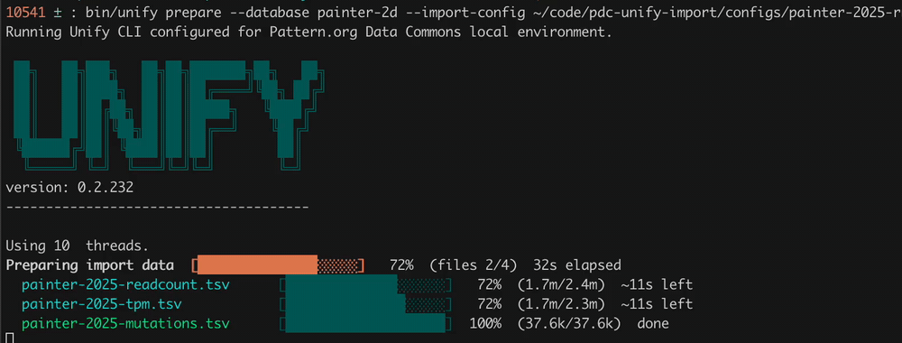

The Unify CLI
Note: this page derived from LLM using unify's docs.

Above: unify prepare working through a real multi-file import, with a progress bar for each input file.
The Unify CLI is the command line tool that harmonizes data into a UnifyBio system. It turns a declarative import config and a set of TSV files into Datomic transaction data, and transacts that data into a database. It is an executable jar wrapped by shell scripts, and is open source (vendekagon-labs/unify).
UnifyBio distributions, such as the Pattern distribution, put the wrapper in bin/:
(In the Unify repository itself, the equivalent wrapper scripts are ./unify and ./unify-local.)
Run it with no arguments, or with --help, to print the task list and options.
Every run prints a banner and the Unify version, reports how many seconds the task took,
and exits with status 0 on success or 1 on failure, so it can be scripted.
The import loop
Most work with the CLI follows the same four steps. The first three are Unify CLI tasks; the fourth is provided by the UnifyBio distribution.
| Step | Command | What it does |
|---|---|---|
| 1 | request-db |
Creates a new Datomic database, installs the schema, and loads seed data. |
| 2 | prepare |
Reads your import config and TSV files and writes transaction data to a working directory. |
| 3 | transact |
Transacts the prepared data from the working directory into the database. |
| 4 | validate |
Checks the database for structural, referential, and semantic problems. |
If validation (or an earlier step) turns up a problem, fix the config or the source data and go around again. Each pass leaves files you can inspect. See Your First Import for a walkthrough and the Quickstart for a runnable example.
bin/unify request-db --database my-first-db \
--schema-directory $SCHEMA_DIR \
--seed-data-directory $SEED_DATA_DIR
bin/unify prepare --import-config $IMPORT_CONFIG_PATH \
--schema-directory $SCHEMA_DIR \
--working-directory $WORKING_DIR
bin/unify transact --database my-first-db \
--working-directory $WORKING_DIR
bin/validate --database my-first-db --dataset "my-first-import"
A UnifyBio distribution may supply --schema-directory and --seed-data-directory in its
wrapper scripts, which is why the quickstart commands omit them.
Tasks
request-db
Creates a new Unify database named by --database, then initializes it with the schema in
--schema-directory and any reference data in --seed-data-directory. Fails if
--database is missing or the database cannot be created.
prepare
Uses an import config to generate all the data needed to run an import. Requires
--import-config, --working-directory, and --schema-directory.
- The import config can be YAML or edn.
- The working directory must not already exist, or must be empty, unless you pass
--resume. - By default, prepare stops at the first error. Pass
--continue-on-errorto have it keep going and report every error at the end (and in the logs), which is usually the fastest way to fix a large config.
transact
Transacts everything prepare wrote to --working-directory into the database named by --database.
The working directory must already exist and contain prepared data.
- Transactions are sent in batches.
--tx-batch-sizesets the batch size (default50; it must be greater than 20 and less than 200). --skip-annotationsleaves the import annotations out of the database.- If the job is interrupted, for example by a network problem or a terminated process,
re-run the same command with
--resumeto pick up where it left off (see Resuming and errors).
validate
Validation checks a transacted database, including referential integrity
(every reference points at an entity that exists) and whether combinations of attributes
make sense together. It is provided by UnifyBio distributions as bin/validate
rather than as a core unify task:
Without --dataset, it defaults to the most recent dataset in the database.
list-dbs and delete-db
list-dbs lists the current databases. delete-db deletes the database named by --database.
Dev databases are cheap, so it is normal to delete and re-request one while you iterate.
Schema tasks
These work on a Unify schema directory (schema.edn, metamodel.edn, and enums.edn).
| Task | What it does | Needs |
|---|---|---|
compile-schema |
Builds a schema directory from a single Unify schema definition. | --unify-schema, --schema-directory |
infer-schema |
Infers a Unify schema definition from a compiled schema directory. Check the output for :unify.error/* keys. |
--schema-directory, --unify-schema |
infer-metaschema |
Generates a basic Datomic analytics metaschema, used for the Trino/SQL integration. | --schema-directory, --metaschema |
infer-json-schema |
Generates a JSON schema for the import config, so editors can autocomplete and check YAML configs. | --schema-directory, --json-schema |
The JSON schema task is covered in Import Config. The inference tasks are in early alpha, and their output should be reviewed.
Options
| Option | Used by | Description |
|---|---|---|
--database NAME |
request-db, transact, delete-db, validate |
The database to run against. |
--import-config FILE |
prepare |
Import config file, YAML or edn. |
--working-directory DIR |
prepare, transact |
Where prepare writes its output, and where transact reads it from. |
--schema-directory DIR |
request-db, prepare, schema tasks |
Directory containing the Unify schema (Datomic schema plus metamodel annotations). |
--seed-data-directory DIR |
request-db |
Reference data to load when the database is created. |
--dataset NAME |
validate |
The dataset to validate. |
--unify-schema FILE |
compile-schema, infer-schema |
An edn file containing a Unify schema definition. |
--metaschema FILE |
infer-metaschema |
Output file for the Datomic analytics metaschema. |
--json-schema FILE |
infer-json-schema |
Output file for the import config JSON schema. |
--tx-batch-size N |
transact |
Datomic transaction batch size (default 50, greater than 20 and less than 200). |
--resume |
transact |
Resume a previously started transact. |
--skip-annotations |
transact |
Do not transact annotations into the database. |
--continue-on-error |
prepare |
Keep going after errors and report them all at the end. |
-h, --help |
all | Print usage. |
Resuming and errors
Resuming a transact. Large imports can take a while, and a network hiccup or a stopped
process can leave a transact half finished. Run the same transact command again with
--resume. Unify skips the import job entity it already wrote and finds the transactions
that previously succeeded before continuing, so expect a pause at the start.
Reading errors. When something fails, Unify prints the failing area and the problem
(for example, a reference to an entity that does not exist, or a bad value), and exits with status 1.
If a transact finishes with anomalies, it prints them and points you to the logs.
For a config with many problems, run prepare with --continue-on-error to see them all at once.
Database names. If --database names a database that does not exist, the CLI stops with
No such database. Either the name is wrong, or the database was deleted (for example, removed
for inactivity on a hosted system). Use list-dbs to check.
Starting over. To redo an import from scratch, use a new --working-directory (or empty the old one),
and delete the database and request-db a fresh one.